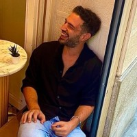

Onur Teztürer

Özet
I am Onur Teztürer. I am a Graphic Designer from Istanbul in Turkey. Currently I am working as a head of design at Turkcell Global Bilgi. I focused on mostly UI Design, Web Design, Illustration.
While working I usually use Photoshop, Illustrator, Dreamweaver, Adobe Animate and Adobe After Effects.
Education
Okan University (2008-2013) - Visual Communication Design
Work Experience
Turkcell Global Bilgi
Experienced Digital Design Specialist
Feb2016 - (still working)
- Making special videos and animations for special events and launches,
- Shooting in the studio for special launches, in-house online trainings and events within the company, editing, montage and animation of the videos shot,
- Preparation of responsive screen designs suitable for mobile and web for digital, mobile platforms applications within the company, font, colour selection, graphics, buttons and menu style design elements,
- To prepare the live broadcasts broadcasted on the human resources application within the company and to ensure that the broadcast is broadcast as a director,
- Creating the visual language of in-house events and organisations in accordance with the concept, designing logos and making video works,
- Delivering projects on time by producing fast and dynamic solutions
- Preparing gifs by animating the company's logos for story tags on Instagram and ensuring that these gifs are published in Instagram story, and also preparing special animated frames for special occasions and enabling users to use them in their stories,
- Organising and preparing online and offline publications such as magazines and e-bulletins in accordance with the concept,
- Delivering projects on time by producing fast and dynamic solutions
Linde Machines
Junior Art Director
Oct2014 - Feb16 (1 year4 months)
- Editing and designing the content of the company's E-Commerce site (banner design, editing product photos, mailing, landing page, etc.)
- Taking and editing photos of all products on the website,
- Doing all graphic design works of the company, (newspaper advertisement, magazine advertisement, business card design, logo design, catalogue design, etc.)
- Shooting videos of all work machines on the website, making montages and preparing videos,
- Designing the content of social media channels,
- Publishing the designs made by doing basic level html, css studies on the site.
TeknoSA
Design Assistant
May2014 - Oct14 (6 months)
- Organising web design visuals in the e-commerce department of the company,
- Banner, landing page, mailing works of the company's e-commerce site,
- Updating the content of the site by editing the images,
- Basic level html, css studies to be published on the site.
Skills
- Design Thinking
- Adobe Photoshop
- Adobe Illustrator
- Adobe After Effects
- Adobe Premiere
- Adobe XD
- Figma
- Visual Studio Code
My Hobbies
Contact Me